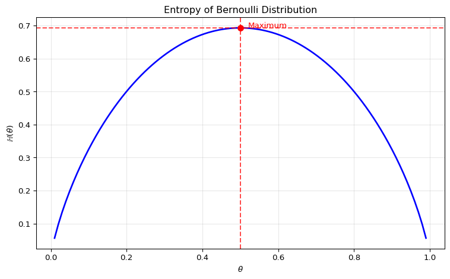
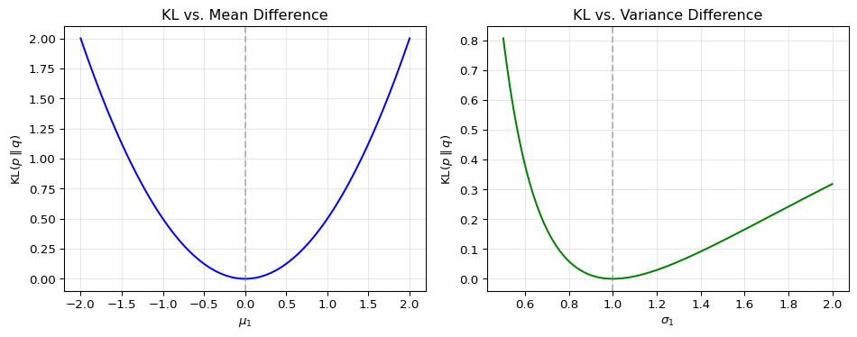
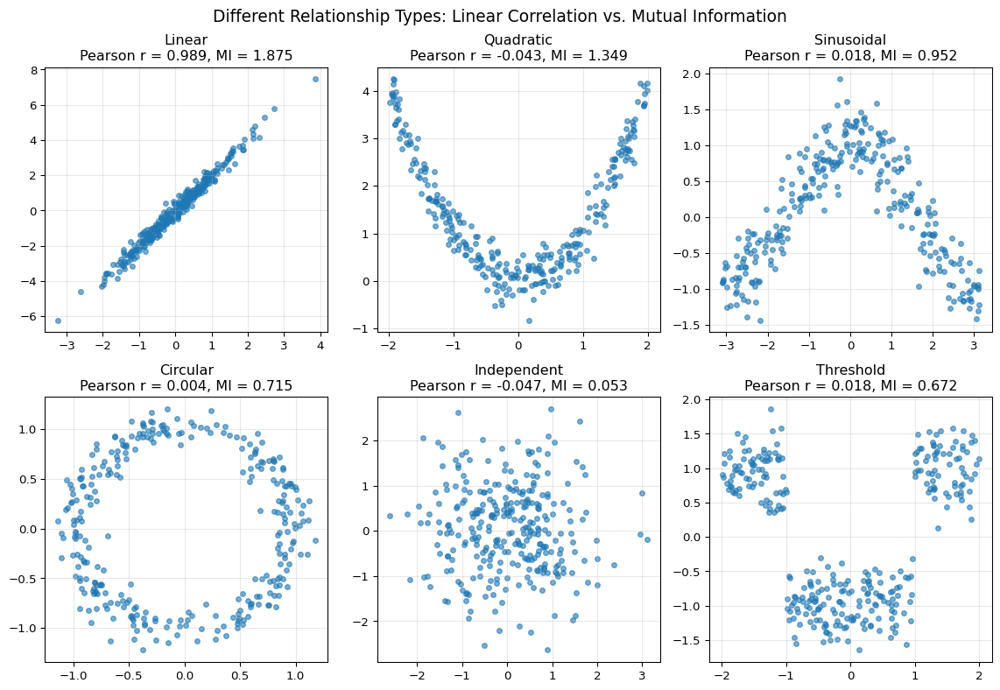

1 Information Theory
1.1 Overview
Information theory provides the language for quantifying uncertainty, surprise, and discrepancy between distributions. In machine learning and econometrics, these ideas appear whenever we estimate likelihood-based models, compare predictive densities, or ask how informative one variable is about another.
This chapter introduces four core objects:
- Entropy for measuring uncertainty in a distribution
- Cross-entropy for measuring expected log-loss under a candidate model
- KL divergence for comparing a model distribution to a reference distribution
- Mutual information for measuring dependence, including nonlinear dependence
Why this matters for econometricians
These concepts are fundamental for:
- likelihood-based estimation and maximum likelihood
- probabilistic forecasting and forecast evaluation
- regularization and representation learning
- understanding dependence beyond correlation
These ideas are not purely abstract. They also appear in applied finance; for an example using entropy-based concepts in financial research, see Chabi-Yo and Colacito (2019).
Note
Reference: Murphy (2022) PML1: Chapter 6.1-6.1.4, 6.2-6.3.5
1.2 Roadmap
The chapter is organized around one main econometric question: how should we quantify uncertainty and compare probability models?
- We start with entropy, which measures the uncertainty in a single distribution.
- We then move to cross-entropy, which has a direct interpretation as expected negative log-likelihood.
- This leads naturally to KL divergence, the key notion of discrepancy between two distributions.
- We use this to connect information theory to maximum likelihood estimation.
- Finally, we study joint entropy, conditional entropy, and mutual information to measure dependence between variables.
1.3 Measuring Distributional Differences
Central Question: How can we measure how much two distributions \(p\) and \(q\) differ?
This question appears repeatedly in econometrics. When we estimate a parametric model, we are implicitly asking whether its distribution is close to the data-generating process. When we compare density forecasts, we are again comparing distributions rather than just point predictions.
We need a divergence measure \(D\) such that:
- \(D(p,q) \geq 0\) with equality if and only if \(p=q\)
- \(D\) should be invariant to reparameterization; e.g., \(\tilde{p}(x) = p\left(\frac{x-\mu}{\sigma}\right)\) should not change the divergence
Question for Reflection
Would the ratio of variances be a good measure to compare two distributions?
Suggested Answer
No, the ratio of variances would not be a good general measure for comparing distributions.
Problems with variance ratios:
- Ignores shape: Two distributions can have identical variances but completely different shapes (e.g., uniform vs. bimodal)
- Ignores location: Distributions with same variance but different means would appear “identical”
- Limited information: Variance only captures second moments, missing higher-order features
Example: Consider:
- \(p\): Uniform distribution on \([-\sqrt{3}, \sqrt{3}]\) (variance = 1)
- \(q\): Normal distribution \(N(0,1)\) (variance = 1)
The variance ratio is 1, suggesting they’re “the same,” but they have completely different “probability structures”!
Note that unlike a metric, we don’t require symmetry or the triangle inequality.
1.4 Entropy (Discrete Case)
The idea is to quantify the uncertainty or information content of a random variable \(X\). Think of entropy \(\mathbb{H}\) as a generalized variance that takes into account the entire shape of the distribution of \(X\), including the tails.
For a discrete \(X\) with probability mass function \(p(x)\) on \(\mathcal{X}\):
\[\mathbb{H}(X) := -\sum_{x\in\mathcal{X}} p(x)\log p(x)\]
We may equivalently write \(\mathbb{H}(p)\).
Note
In classical information theory, it’s convenient to use \(\log_2\) instead of \(\log_e\) for the interpretation as “bits.” We’ll stick to \(\log_e\).
Binary Case
Let’s start with the binary case, where \(X\) can take two values (0 and 1) with probabilities \(p(0)=1-\theta\) and \(p(1)=\theta\).
Example: Bernoulli Entropy
For a Bernoulli trial with \(\mathbb{P}(X=1)=\theta\), the entropy is:
\[\mathbb{H}(\theta) = -\theta \log\theta - (1-\theta)\log(1-\theta)\]
Definition: Bernoulli Entropy
For a Bernoulli random variable \(X\) with \(\mathbb{P}(X=1)=\theta\), the entropy is:
\[\mathbb{H}(\theta) = -\theta \log\theta - (1-\theta)\log(1-\theta)\]
Key Insight: Maximum uncertainty occurs when the outcome is most unpredictable (\(\theta = 0.5\)).
Formal Derivation of Maximum
We can show that entropy \(\mathbb{H}(\theta)\) is maximized at \(\theta=0.5\):
The derivative with respect to \(\theta\) is:
\[\frac{d\mathbb{H}}{d\theta} = \log(1-\theta) - \log\theta\]
Setting to zero gives \(\theta = 0.5\). The second derivative is:
\[\frac{d^2\mathbb{H}}{d\theta^2} = -\frac{1}{1-\theta} - \frac{1}{\theta} < 0\]
which confirms a maximum.
1.5 Differential Entropy (Continuous Case)
For a continuous \(X\) with density \(p(x)\), we define:
\[h(X) := -\int p(x)\log p(x)\,dx\]
Example: Gaussian Entropy
For a Gaussian \(X \sim N(\mu,\sigma^2)\), the entropy is:
\[h(X) = \frac{1}{2}\log(2\pi e\sigma^2)\]
The entropy increases with variance \(\sigma^2\), which aligns with our intuition. For a proof, see the exercises at the end of this section.
Maximum Entropy Property of Gaussians
Key Result: Among all distributions with given covariance on \(\mathbb{R}\), the Gaussian has the largest entropy.
Interpretation: There is no uniform distribution on \(\mathbb{R}\), but the Gaussian is the “most uniform” distribution under the variance constraint.
Why?
- Entropy measures uncertainty - a distribution with higher entropy is “more evenly spread out” or “less predictable”
- Covariance fixes the spread (second moments)
- Under fixed covariance, the only freedom is how probability mass is shaped
- For given variance, a Gaussian is the smoothest possible way to distribute probability mass across \(\mathbb{R}\)
- Any other shape (more peaked or heavy-tailed) concentrates mass somewhere, reducing entropy
Takeaway: Entropy captures more than just variance.
1.6 Limitations of Raw Entropy
\[h(X) := -\int p(x)\log p(x)\,dx\]
Downsides of differential entropy: - Relative comparisons are more meaningful than raw \(h(X)\) values - Generally not invariant to reparameterization - Can be negative (unlike discrete entropy)
This motivates us to consider relative measures…
1.7 Cross-Entropy
If we want to compare distribution \(q\) relative to a reference distribution \(p\), we use cross-entropy:
Discrete case:
\[\mathbb{H}_{ce}(p,q) := -\sum_{x \in \mathcal{X}} p(x) \log q(x)\]
Continuous case:
\[h_{ce}(p,q) := -\int p(x)\log q(x)\,dx\]
Interpretation as Expected Negative Log-Likelihood
We can rewrite cross-entropy as:
\[h_{ce}(p,q) = -\mathbb{E}_{X \sim p}[\log q(X)] = \mathbb{E}_{X \sim p}[\text{NLL}(q,X)]\]
This gives cross-entropy a clear interpretation as the expected negative log-likelihood of \(q\) when \(p\) is the true distribution.
However, cross-entropy still has limitations: it can be negative and is not invariant to reparameterization.
Question for Reflection
Suppose two density forecasts for inflation have the same mean and variance, but one assigns substantially more probability to tail events. Which parts of the information-theoretic framework in this chapter would notice the difference, and which simple moment comparisons would miss it?
Suggested Answer
Simple comparisons of forecast means and variances would miss the difference by construction. Entropy may change because it depends on the full shape of each density, not only on the first two moments.
Cross-entropy and KL divergence would also notice the difference once a reference distribution or realized outcomes are used. They evaluate the log density assigned across the support, so tail probabilities matter directly. If the true inflation distribution puts substantial probability in the tails, a forecast with too little tail mass receives poor log scores and a larger KL divergence from the truth. If the true distribution is thin-tailed, a tail-heavy forecast may waste probability mass in regions that are rarely realized.
1.8 Relative Entropy (KL Divergence)
We combine entropy and cross-entropy to define a divergence measure that is non-negative, zero if and only if distributions are equal, and invariant to reparameterization.
For distributions \(p\) and \(q\) on the same space \(\mathcal{X}\):
Discrete case:
\[D_{\text{KL}}(p\parallel q) := \sum_{x \in \mathcal{X}} p(x)\log\frac{p(x)}{q(x)}\]
Continuous case:
\[D_{\text{KL}}(p\parallel q) := \int_{\mathcal{X}} p(x)\log\frac{p(x)}{q(x)}\,dx\]
Also called Kullback-Leibler (KL) divergence. Note: it’s not a metric since it’s asymmetric and violates the triangle inequality.
Relationship to Entropy and Cross-Entropy
The KL divergence decomposes as:
\[D_{\text{KL}}(p\parallel q) = -\underbrace{h(p)}_{\text{entropy}} + \underbrace{h_{ce}(p,q)}_{\text{cross-entropy}}\]
Where: - \(-h(p)\) measures the irreducible uncertainty of \(p\) - \(h_{ce}(p,q)\) measures the expected log-loss of \(q\) when \(p\) is the true distribution
Properties of KL Divergence
- Non-negativity: \(D_{\text{KL}}(p\parallel q) \geq 0\), with equality if and only if \(p(x) = q(x)\) for all \(x\) (for a proof, see exercises below)
- Asymmetry: \(D_{\text{KL}}(p\parallel q) \neq D_{\text{KL}}(q\parallel p)\) in general
- Reparameterization invariance: If \(p\) and \(q\) are reparameterized, the KL divergence remains unchanged (for a proof, see exercises below)
Example: KL Divergence Between Gaussians
For \(p = N(\mu_0,\sigma_0^2)\) and \(q = N(\mu_1,\sigma_1^2)\):
\[D_{\text{KL}}(p \parallel q) = \frac{1}{2}\left(\frac{(\mu_1-\mu_0)^2}{\sigma_1^2} + \frac{\sigma_0^2}{\sigma_1^2} - 1 + \log\frac{\sigma_1^2}{\sigma_0^2}\right)\]
The divergence is symmetric only if \(\sigma_0^2=\sigma_1^2\) and \(\mu_0=\mu_1\). Direction matters in optimization and approximation tasks.
Visualizing KL Divergence Between Gaussians
To build intuition for KL divergence, let’s see how it changes as two Gaussian distributions differ in mean and variance. We examine \(D_{\text{KL}}(p \parallel q)\) where \(p = \mathcal{N}(\mu_0, \sigma_0^2)\) is the reference distribution and \(q = \mathcal{N}(\mu_1, \sigma_1^2)\) is the comparison distribution.

How to Interpret This Figure
Setup: We fix the reference distribution at \(p = \mathcal{N}(0,1)\) and measure how much a comparison distribution \(q\) differs from it using \(D_{\text{KL}}(p \parallel q)\).
Left panel: changing the mean
- It shows what happens when we vary \(\mu_1\) while keeping both variances equal to one.
- KL divergence grows quadratically as the means move apart.
- The minimum is attained at \(\mu_1 = \mu_0 = 0\), where the two distributions coincide.
Right panel: changing the variance
- It shows what happens when we vary \(\sigma_1\) while keeping both means equal to zero.
- KL divergence is asymmetric around the reference variance.
- When \(\sigma_1 < \sigma_0\), the comparison density is too narrow and misses tail mass of \(p\).
- When \(\sigma_1 > \sigma_0\), the comparison density is too diffuse and places mass where \(p\) has little probability.
- The minimum is attained at \(\sigma_1 = \sigma_0 = 1\).
Takeaway:
- KL divergence increases as the model distribution moves away from the reference distribution.
- The direction matters: \(D_{\text{KL}}(p \parallel q)\) and \(D_{\text{KL}}(q \parallel p)\) generally penalize different kinds of misspecification.
1.9 MLE as KL-Divergence Minimization
Maximum likelihood estimation (MLE) seeks to find parameters \(\theta\) that make observed data most probable. This is equivalent to minimizing the KL divergence between the empirical data distribution \(\hat{p}_{\text{data}}\) and the model distribution \(p_\theta\):
\[D_{\text{KL}}(\hat{p}_{\text{data}} \parallel p_\theta) = \mathbb{E}_{X \sim \hat{p}_{\text{data}}}[\log \hat{p}_{\text{data}}(X) - \log p_\theta(X)]\]
\[= \underbrace{\mathbb{E}_{X \sim \hat{p}_{\text{data}}}[\log \hat{p}_{\text{data}}(X)]}_{\text{constant w.r.t. } \theta} - \underbrace{\mathbb{E}_{X \sim \hat{p}_{\text{data}}}[\log p_\theta(X)]}_{\text{log-likelihood}}\]
Since the first term is constant with respect to \(\theta\), minimizing the KL divergence is equivalent to maximizing the log-likelihood; see also our discussion in Section 3.
Econometric interpretation
This provides an information-theoretic justification for the MLE principle. In words: maximum likelihood chooses the model whose implied distribution is closest, in KL divergence, to the empirical distribution of the data.
Forward Link: MLE and Overfitting
Maximum likelihood by itself does not protect us against overfitting. In flexible models, training likelihood can keep improving even when out-of-sample performance deteriorates. We return to this point in the next chapter on cross-validation, where model selection is based on unseen data rather than in-sample fit alone.
1.10 Joint and Conditional Entropy
For understanding relationships between random variables, we extend to joint and conditional entropy.
Let \(X\) and \(Y\) be random variables with joint distribution \(p(x,y)\).
Joint entropy (uncertainty of \(X\) and \(Y\) together):
\[\mathbb{H}(X,Y) := -\sum_{x,y} p(x,y)\log p(x,y)\]
Conditional entropy (uncertainty of \(Y\) given \(X\)):
\[\mathbb{H}(Y|X) := -\sum_{x,y} p(x,y)\log p(y|x)\]
Key Properties of Joint and Conditional Entropy
- Independence: If \(X\) and \(Y\) are independent, then \(\mathbb{H}(X,Y) = \mathbb{H}(X) + \mathbb{H}(Y)\) (for proof see exercises below)
- Chain rule: \(\mathbb{H}(X,Y) = \mathbb{H}(X) + \mathbb{H}(Y|X) = \mathbb{H}(Y) + \mathbb{H}(X|Y)\)
- Conditioning reduces entropy: \(\mathbb{H}(Y|X) \leq \mathbb{H}(Y)\) (equality if \(X\) and \(Y\) independent)
Intuition: Learning about one variable can only reduce (never increase) our uncertainty about another variable.
1.11 Mutual Information
Mutual information (MI) quantifies dependence between variables:
\[\mathbb{I}(X;Y) := \sum_{x,y} p(x,y) \log\frac{p(x,y)}{p(x)p(y)} = \mathbb{H}(X) + \mathbb{H}(Y) - \mathbb{H}(X,Y)\]
Key Properties of Mutual Information
- \(\mathbb{I}(X;Y) = 0\) if and only if \(X\) and \(Y\) are independent
- Alternative form: \(\mathbb{I}(X;Y) = \mathbb{E}_{X,Y}[\log p(Y|X) - \log p(Y)]\)
- Useful for feature selection, representation learning, and dependence measurement

Key insight of the figure above: While Pearson correlation only captures linear relationships, mutual information can detect a much broader class of dependencies. This makes it useful for exploratory data analysis and feature selection when relevant relationships may be nonlinear.
1.12 Key takeaways
Information theory provides fundamental tools for machine learning and econometrics:
- Entropy quantifies uncertainty in distributions
- Cross-entropy measures expected log-loss between distributions
- KL divergence provides a principled way to compare distributions
- MLE can be understood as KL divergence minimization
- Mutual information captures dependencies beyond linear correlation
These concepts underlie many machine-learning and econometric tools, including maximum likelihood, probabilistic forecast evaluation, variational inference, and feature selection.
1.13 Exercises
Exercise 1.1: Differential Entropy of Gaussian Distribution
Let \(X \sim \mathcal{N}(0, \sigma^2)\) with density
\[ p(x)=\frac{1}{\sqrt{2\pi\sigma^2}} \exp\left(-\frac{x^2}{2\sigma^2}\right). \]
- Show that \[ h(X) = -\int p(x)\log p(x)\,dx = \frac{1}{2}\log(2\pi e \sigma^2). \]
- Suppose two Gaussian predictive densities have the same mean but variances \(\sigma_1^2 < \sigma_2^2\). Use your result to explain which forecast distribution is more diffuse and how this connects entropy to predictive uncertainty.
Exam level. Part 1 is a controlled derivation; Part 2 asks for the forecasting interpretation.
Hint for Part 1
Substitute the Gaussian log-density into the definition of differential entropy and use \(\int p(x)\,dx=1\) and \(\int x^2 p(x)\,dx=\sigma^2\).
Hint for Part 2
Entropy is increasing in \(\sigma^2\) for a Gaussian distribution.
Solution
Part 1: Deriving Gaussian Entropy
The log-density is
\[ \log p(x) = -\frac{1}{2}\log(2\pi\sigma^2) - \frac{x^2}{2\sigma^2}. \]
Hence
\[ h(X) = -\int p(x)\log p(x)\,dx = \frac{1}{2}\log(2\pi\sigma^2)\int p(x)\,dx + \frac{1}{2\sigma^2}\int x^2 p(x)\,dx. \]
Using \(\int p(x)\,dx=1\) and \(\int x^2 p(x)\,dx=\sigma^2\), we obtain
\[ h(X)=\frac{1}{2}\log(2\pi\sigma^2)+\frac{1}{2} =\frac{1}{2}\log(2\pi e \sigma^2). \]
Part 2: Interpreting Predictive Uncertainty
For a Gaussian distribution,
\[ h(X)=\frac{1}{2}\log(2\pi e \sigma^2), \]
which is strictly increasing in \(\sigma^2\). Therefore the forecast with variance \(\sigma_2^2\) has higher entropy and is more diffuse. In forecasting terms, entropy summarizes uncertainty: a wider predictive density carries more uncertainty than a tighter one.
Exercise 1.2: Gaussian Distribution Means Maximum Entropy (For Fixed Variance)
Let \(p\) be any continuous density on \(\mathbb{R}\) with mean \(\mu\) and variance \(\sigma^2\), and let \(q\) denote the Gaussian density \(\mathcal{N}(\mu,\sigma^2)\).
- Starting from \[ D_{\mathrm{KL}}(p \Vert q) = \int p(x)\log\frac{p(x)}{q(x)}\,dx \ge 0, \] show that \[ h(p) \le -\int p(x)\log q(x)\,dx. \]
- Evaluate the right-hand side and show that \[ -\int p(x)\log q(x)\,dx = \frac{1}{2}\log(2\pi e \sigma^2)=h(q). \]
- Conclude that the Gaussian distribution has maximal entropy among all densities with mean \(\mu\) and variance \(\sigma^2\). Why does this make the Gaussian a natural benchmark for a “least informative” predictive density under a variance restriction?
Exam level. The exercise turns the maximum-entropy argument into a guided KL-based derivation with a forecasting interpretation.
Hint for Part 1
Expand the KL divergence into an entropy term and a cross-entropy term.
Hint for Part 2
Insert the Gaussian log-density for \(q\) and use the fact that \(p\) and \(q\) have the same mean and variance.
Hint for Part 3
Ask what it means for a predictive density to be as diffuse as possible subject to a fixed variance.
Solution
Part 1: From KL to a Cross-Entropy Bound
Because
\[ D_{\mathrm{KL}}(p \Vert q) = \int p(x)\log p(x)\,dx - \int p(x)\log q(x)\,dx \ge 0, \]
we can rewrite this as
\[ 0 \le -h(p) - \int p(x)\log q(x)\,dx, \]
so
\[ h(p) \le -\int p(x)\log q(x)\,dx. \]
Part 2: Evaluating the Gaussian Cross-Entropy
The Gaussian log-density is
\[ \log q(x) = -\frac{1}{2}\log(2\pi\sigma^2) - \frac{(x-\mu)^2}{2\sigma^2} \]
Hence
\[ -\int p(x)\log q(x)\,dx = \frac{1}{2}\log(2\pi\sigma^2)\int p(x)\,dx + \frac{1}{2\sigma^2}\int (x-\mu)^2 p(x)\,dx. \]
Because \(p\) has mean \(\mu\) and variance \(\sigma^2\),
\[ \int p(x)\,dx = 1, \qquad \int (x-\mu)^2 p(x)\,dx = \sigma^2. \]
Therefore
\[ -\int p(x)\log q(x)\,dx = \frac{1}{2}\log(2\pi\sigma^2) + \frac{1}{2} = \frac{1}{2}\log(2\pi e \sigma^2) = h(q). \]
Part 3: Interpreting the Maximum-Entropy Result
Combining Parts 1 and 2 gives
\[ h(p) \le h(q). \]
Equality holds if and only if \(D_{\mathrm{KL}}(p \Vert q)=0\), which implies \(p=q\) almost everywhere.
This makes the Gaussian a natural benchmark under a variance restriction: among all predictive densities with the same second moment, it is the most diffuse or least informative one.
Exercise 1.3: Non-Negativity of KL Divergence (Gibbs’ Inequality)
Show that the Kullback-Leibler (KL) divergence is always non-negative. This fundamental property is also known as the Information Inequality or Gibbs’ Inequality.
Recall the definition of KL divergence for discrete distributions \(p\) and \(q\):
\[ D_{\text{KL}}(p \parallel q) = \sum_{x \in \mathcal{X}} p(x) \log\frac{p(x)}{q(x)} \]
- Use Jensen’s inequality to prove that \(D_{\text{KL}}(p \parallel q) \ge 0\).
- Show that \(D_{\text{KL}}(p \parallel q)=0\) if and only if \(p(x)=q(x)\) for all \(x \in \mathcal{X}\) with \(p(x)>0\).
- Briefly explain why this result matters for comparing estimated likelihood models or predictive densities.
Exam level. The last part links the inequality back to model comparison and misspecification.
Hint for Part 1
Use Jensen’s inequality, which states that for a convex function \(f\), \(\mathbb{E}[f(X)] \geq f(\mathbb{E}[X])\). Remember that \(-\log(x)\) is a convex function.
Hint for Part 2
Equality in Jensen’s inequality requires the argument of the convex function to be almost surely constant.
Hint for Part 3
Relate KL divergence to the expected log-score gap between a model and the true distribution.
Solution
Part 1: Jensen’s Inequality
Let’s rewrite the KL divergence definition:
\[ D_{\text{KL}}(p \parallel q) = \sum_{x} p(x) \log\frac{p(x)}{q(x)} = - \sum_{x} p(x) \log\frac{q(x)}{p(x)} \]
This can be seen as the negative expectation of \(\log\frac{q(x)}{p(x)}\) with respect to the distribution \(p(x)\):
\[ D_{\text{KL}}(p \parallel q) = - \mathbb{E}_{X \sim p}\left[\log\frac{q(X)}{p(X)}\right] \]
Now, we apply Jensen’s inequality. Since \(-\log(z)\) is a convex function, we have:
\[ \mathbb{E}[-\log(Z)] \ge -\log(\mathbb{E}[Z]) \]
Applying this to our case, where \(Z = \frac{q(X)}{p(X)}\):
\[ D_{\text{KL}}(p \parallel q) = \mathbb{E}_{X \sim p}\left[-\log\frac{q(X)}{p(X)}\right] \ge -\log\left(\mathbb{E}_{X \sim p}\left[\frac{q(X)}{p(X)}\right]\right) \]
Let’s evaluate the expectation inside the logarithm:
\[ \mathbb{E}_{X \sim p}\left[\frac{q(X)}{p(X)}\right] = \sum_x p(x) \frac{q(x)}{p(x)} = \sum_x q(x) = 1 \]
Since the sum of any probability distribution is 1.
Substituting this back into our inequality:
\[ D_{\text{KL}}(p \parallel q) \ge -\log(1) = 0 \]
This proves that \(D_{\text{KL}}(p \parallel q) \ge 0\).
Part 2: Characterizing Equality
For the equality condition, Jensen’s inequality holds with equality if and only if the random variable is a constant. In our case, this means \(\frac{q(x)}{p(x)} = c\) for some constant \(c\).
\[ \sum_x q(x) = \sum_x c \cdot p(x) \implies 1 = c \sum_x p(x) \implies c=1 \]
Therefore, equality holds if and only if \(\frac{q(x)}{p(x)} = 1\), which means \(p(x) = q(x)\) for all \(x\).
Part 3: Why This Matters for Model Comparison
This matters because KL divergence measures the expected log-score gap between the true distribution and an approximating model. Non-negativity says that, on average, no misspecified model can outperform the truth under log score. That is why KL divergence is a natural measure of model misspecification in likelihood-based econometrics and density forecasting.
Exercise 1.4: Invariance of KL divergence
Show that the Kullback-Leibler (KL) divergence is invariant to a change of variables (reparameterization).
Prove this property. Specifically, let \(X\) be a continuous random variable with two possible probability densities, \(p_X(x)\) and \(q_X(x)\). Let \(y = g(x)\) be an invertible transformation with corresponding densities \(p_Y(y)\) and \(q_Y(y)\). Show that the KL divergence is unchanged:
\[ D_{\text{KL}}(p_X \parallel q_X) = D_{\text{KL}}(p_Y \parallel q_Y) \]
- Write the transformed densities \(p_Y(y)\) and \(q_Y(y)\) using the change-of-variables formula.
- Show that the density ratio satisfies \[ \frac{p_Y(y)}{q_Y(y)}=\frac{p_X(g^{-1}(y))}{q_X(g^{-1}(y))}. \]
- Use this result to prove that \(D_{\text{KL}}(p_X \parallel q_X) = D_{\text{KL}}(p_Y \parallel q_Y)\) and explain why this matters when comparing models after a reparameterization of the data.
Exam level. The exercise breaks the invariance proof into explicit steps and asks for the interpretation.
Hint for Part 1
The proof relies on the change of variables formula for probability densities. How does a density \(p_X(x)\) transform into \(p_Y(y)\)?
Hint for Part 2
Start by writing out the definition of \(D_{\text{KL}}(p_Y \parallel q_Y)\) and focus on simplifying the ratio \(\frac{p_Y(y)}{q_Y(y)}\) first.
Hint for Part 3
After proving invariance, ask why a divergence measure should not depend on the coordinate system in which the same data are expressed.
Solution
Part 1: Transforming the Densities
Let \(y=g(x)\) be an invertible transformation, so \(x=g^{-1}(y)\). The probability densities for the new variable \(y\) are given by:
\[ p_Y(y) = p_X(g^{-1}(y)) \left| \frac{dx}{dy} \right| \quad \text{and} \quad q_Y(y) = q_X(g^{-1}(y)) \left| \frac{dx}{dy} \right| \]
where \(\left| \frac{dx}{dy} \right|\) is the absolute value of the first-order derivative of the inverse transformation \(g^{-1}\).
Part 2: Canceling the Jacobian
The KL divergence for \(Y\) is \(D_{\text{KL}}(p_Y \parallel q_Y) = \int p_Y(y) \log\frac{p_Y(y)}{q_Y(y)} \,dy\). Let’s analyze the ratio inside the logarithm. The derivative terms, being identical for both transformations, cancel out:
\[ \frac{p_Y(y)}{q_Y(y)} = \frac{p_X(g^{-1}(y)) \left| \frac{dx}{dy} \right|}{q_X(g^{-1}(y)) \left| \frac{dx}{dy} \right|} = \frac{p_X(g^{-1}(y))}{q_X(g^{-1}(y))} \]
This is the crucial step. The relative difference between the densities is independent of the coordinate system.
Part 3: Proving and Interpreting Invariance
Now, substitute the transformed density \(p_Y(y)\) and the simplified ratio back into the KL divergence formula:
\[ D_{\text{KL}}(p_Y \parallel q_Y) = \int_{-\infty}^{\infty} \underbrace{p_X(g^{-1}(y)) \left| \frac{dx}{dy} \right|}_{p_Y(y)} \underbrace{\log\frac{p_X(g^{-1}(y))}{q_X(g^{-1}(y))}}_{\log(p_Y/q_Y)} \,dy \]
We can now perform a change of variables in the integral itself, from \(y\) back to \(x\). Using \(x = g^{-1}(y)\), we have \(dx = \left| \frac{dx}{dy} \right| dy\). Substituting this into the integral gives:
\[ D_{\text{KL}}(p_Y \parallel q_Y) = \int_{-\infty}^{\infty} p_X(x) \log\frac{p_X(x)}{q_X(x)} \,dx \]
This final expression is exactly the definition of \(D_{\text{KL}}(p_X \parallel q_X)\).
Thus, we have shown that \(D_{\text{KL}}(p_X \parallel q_X) = D_{\text{KL}}(p_Y \parallel q_Y)\), proving that KL divergence is invariant to reparameterization.
This matters because model comparisons based on KL divergence or expected log score should not depend on whether we work with levels, growth rates, or another one-to-one transformation of the same quantity.
Exercise 1.5: KL Between Two Gaussian Distributions
Let
\[ P=\mathcal{N}(\mu_0,\sigma^2), \qquad Q=\mathcal{N}(\mu_1,\sigma^2), \]
so the two Gaussian distributions have the same variance but different means.
- Show that \[ D_{\mathrm{KL}}(P\Vert Q)=\frac{(\mu_0-\mu_1)^2}{2\sigma^2}. \]
- Suppose two competing models \(Q_A=\mathcal{N}(\mu_A,\sigma^2)\) and \(Q_B=\mathcal{N}(\mu_B,\sigma^2)\) use the same variance as the true density \(P\). Show that \[ D_{\mathrm{KL}}(P\Vert Q_A)<D_{\mathrm{KL}}(P\Vert Q_B) \quad\Longleftrightarrow\quad |\mu_0-\mu_A|<|\mu_0-\mu_B|. \]
- Explain why, in this special Gaussian case, KL-based model comparison is equivalent to comparing squared forecast bias in the conditional mean.
Exam level. The exercise keeps the Gaussian calculation manageable and then links it to likelihood-based model comparison.
Hint for Part 1
Because the variances are equal, the normalization constants cancel in the log ratio.
Hint for Part 2
Use the formula from Part 1 for each competing model and compare the resulting squared distances from \(\mu_0\).
Hint for Part 3
What remains of the KL formula once the predictive variance is fixed across all competing models?
Solution
Part 1: Computing the Gaussian KL Divergence
The KL divergence is
\[ D_{\mathrm{KL}}(P\Vert Q) = \int_{-\infty}^{\infty} p(x) \log\frac{p(x)}{q(x)} \,dx \]
with
\[ p(x)=\frac{1}{\sqrt{2\pi\sigma^2}}\exp\left(-\frac{(x-\mu_0)^2}{2\sigma^2}\right), \qquad q(x)=\frac{1}{\sqrt{2\pi\sigma^2}}\exp\left(-\frac{(x-\mu_1)^2}{2\sigma^2}\right). \]
Hence
\[ \log\frac{p(x)}{q(x)} = -\frac{(x-\mu_0)^2}{2\sigma^2} + \frac{(x-\mu_1)^2}{2\sigma^2}. \]
Taking expectation under \(X \sim P\) gives
\[ D_{\mathrm{KL}}(P\Vert Q) = \frac{1}{2\sigma^2}\mathbb{E}_P\left[(X-\mu_1)^2-(X-\mu_0)^2\right]. \]
Now
\[ \mathbb{E}_P[(X-\mu_0)^2]=\sigma^2 \]
and
\[ \mathbb{E}_P[(X-\mu_1)^2]=\sigma^2+(\mu_0-\mu_1)^2. \]
Therefore
\[ D_{\mathrm{KL}}(P\Vert Q) =\frac{1}{2\sigma^2}\left[\sigma^2+(\mu_0-\mu_1)^2-\sigma^2\right] =\frac{(\mu_0-\mu_1)^2}{2\sigma^2}. \]
Part 2: Ranking Competing Mean Forecasts
From Part 1,
\[ D_{\mathrm{KL}}(P\Vert Q_A)=\frac{(\mu_0-\mu_A)^2}{2\sigma^2}, \qquad D_{\mathrm{KL}}(P\Vert Q_B)=\frac{(\mu_0-\mu_B)^2}{2\sigma^2}. \]
Because the common factor \(1/(2\sigma^2)\) is positive,
\[ D_{\mathrm{KL}}(P\Vert Q_A)<D_{\mathrm{KL}}(P\Vert Q_B) \quad\Longleftrightarrow\quad (\mu_0-\mu_A)^2<(\mu_0-\mu_B)^2. \]
Since both sides are nonnegative, this is equivalent to
\[ |\mu_0-\mu_A|<|\mu_0-\mu_B|. \]
Part 3: Interpreting KL-Based Model Comparison
When the predictive variance is fixed, the KL divergence depends only on the squared distance between the model mean and the true mean. So in this special Gaussian case, KL-based model comparison is equivalent to comparing squared forecast bias in the conditional mean.
Exercise 1.6: Prove Entropy is Additive for Independent Variables
Let \(X\) and \(Y\) be discrete random variables with joint distribution \(p(x,y)\).
- If \(X\) and \(Y\) are independent, prove that \[ \mathbb{H}(X,Y)=\mathbb{H}(X)+\mathbb{H}(Y). \]
- Define the mutual information by \[ I(X;Y)=\mathbb{H}(X)+\mathbb{H}(Y)-\mathbb{H}(X,Y). \] and prove that \[ I(X;Y)=D_{\mathrm{KL}}\!\big(p(x,y)\,\|\,p(x)p(y)\big). \] Use this to show that independence implies \(I(X;Y)=0\).
- Explain why a positive value of mutual information is useful in applied work even when the linear correlation between \(X\) and \(Y\) is zero.
Exam level. The exercise connects entropy additivity to the interpretation of mutual information as a general dependence measure.
Hint for Part 1
Start with the definition of joint entropy and use the fact that for independent variables, \(p(x,y) = p(x)p(y)\).
Hint for Part 2
Write the KL divergence between the joint distribution and the product of the marginals, then expand the logarithm.
Hint for Part 3
Think of settings where the dependence is nonlinear, so correlation can be zero even though one variable still helps predict the other.
Solution
Part 1: Entropy Additivity Under Independence
\[\begin{align} \mathbb{H}(X,Y) &= -\sum_{x,y} p(x,y)\log p(x,y) && \text{(definition)}\\ &= -\sum_{x,y} p(x)p(y)\log(p(x)p(y)) && \text{(independence)}\\ &= -\sum_{x,y} p(x)p(y)[\log p(x) + \log p(y)] && \text{(log calculus)}\\ &= -\sum_{x,y} p(x)p(y)\log p(x) - \sum_{x,y} p(x)p(y)\log p(y) \\ &= -\sum_x p(x)\log p(x) \underbrace{\left(\sum_y p(y)\right)}_{=1} - \sum_y p(y)\log p(y) \underbrace{\left(\sum_x p(x)\right)}_{=1} \\ &= \mathbb{H}(X) + \mathbb{H}(Y) \end{align}\]
Part 2: Mutual Information as a KL Divergence
We have
\[ D_{\mathrm{KL}}\!\big(p(x,y)\,\|\,p(x)p(y)\big) = \sum_{x,y} p(x,y)\log\frac{p(x,y)}{p(x)p(y)}. \]
\[\begin{align*} D_{\mathrm{KL}}\!\big(p(x,y)\,\|\,p(x)p(y)\big) &= \sum_{x,y} p(x,y)\log p(x,y) - \sum_{x,y} p(x,y)\log p(x) - \sum_{x,y} p(x,y)\log p(y) \\ &= -\mathbb{H}(X,Y)+\mathbb{H}(X)+\mathbb{H}(Y) \\ &= I(X;Y). \end{align*}\] If \(X\) and \(Y\) are independent, then \(p(x,y)=p(x)p(y)\), so the KL divergence is zero and therefore
\[ I(X;Y)=0. \]
Part 3: Why Mutual Information Adds Value
A positive mutual information means that knowing one variable reduces uncertainty about the other, even if the relationship is nonlinear and therefore invisible to correlation. This is useful in applications such as feature screening and forecast combination, where economically relevant dependence need not be linear.
References
Chabi-Yo, Fousseni, and Riccardo Colacito. 2019. “The term structures of coentropy in international financial markets.” Management Science 65 (8): 3541–58. https://doi.org/10.1287/mnsc.2017.3017.
Murphy, Kevin P. 2022. Probabilistic Machine Learning: An Introduction. Cambridge: MIT Press.